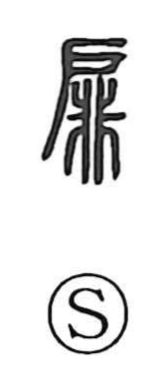

扉

Uncategorized
Kun: tobira | On: hi
door leaf ・ hinged door ・ door panel
Explanation
扉 is a phono-semantic character. The left element 戸 depicts a single swing door and supplies the meaning, while 非 on the right is the phonetic that gives the on-reading hi. 非 originally showed a fine-toothed comb, from which comes the idea of elements lined up to left and right. The Shuowen already glosses it as the leaf of a 戶-type door. In contrast to 戸, which pictures a single swinging door, and 門, a two-leaf gate, 扉 refers specifically to the door leaf that opens and closes on pivots (枢), the short round pegs set into the upper and lower corners.